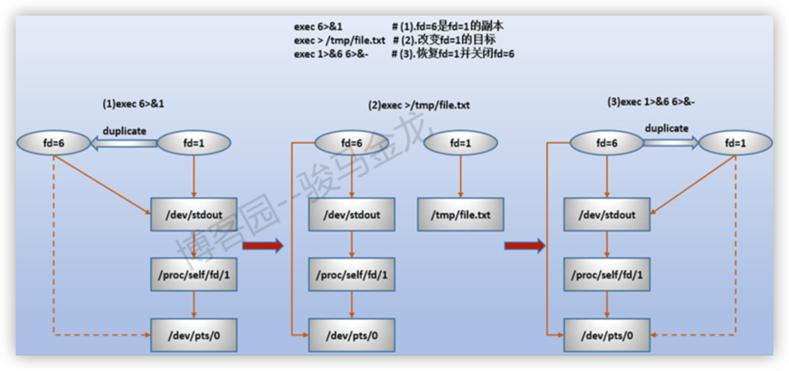

Linux 中 /dev/fd/1 和 /dev/stdout /dev/stderr 的区别
操作系统(Linux)中所有的输入/输出操作都是通过文件描述符来实现的，文件描述符的值为一个非负整数。当打开一个文件或者创建一个新的文件时，内核会返回一个文件描述符作为标识该文件的句柄。
在 Linux 中，每一个进程打开时都会自动获取 3 个文件描述符 0、1 和 2，如果要打开其他文件，则文件描述符必须从 3 开始标识。对于我们人为要打开的描述符，建议使用 9 以内的描述符，超过 9 的描述符可能已经被系统内部分配给其他进程。
/dev/fd/1- 一个 动态 的符号链接
- 指向文件描述符
1的软链接，只能在 当前进程中使用
/dev/fd/1 是一个符号链接，链接到 shell 为进程打开的文件描述符 1 对应的文件。也就是说，如果在程序中使用 /dev/fd/1，则相当于直接使用标准输出。其中，/dev/fd 目录包含了当前进程打开的所有文件描述符对应的文件节点。
root@a74e90de710f:/opt/trident# ll /dev/fd/
lrwx------ 1 root root 64 Mar 13 22:23 0 -> /dev/pts/0
lrwx------ 1 root root 64 Mar 13 22:23 1 -> /dev/pts/0
lrwx------ 1 root root 64 Mar 13 22:23 2 -> /dev/pts/0
lr-x------ 1 root root 64 Mar 13 22:23 3 -> /proc/635/fd/ # 执行该命令的fd
root@a74e90de710f:/opt/trident# ls -lh /dev/fd/1
lrwx------ 1 root root 64 Mar 13 22:31 /dev/fd/1 -> /dev/pts/0
root@a74e90de710f:/opt/trident# ls -lh /dev/pts/0
crw--w---- 1 root tty 136, 0 Mar 13 22:31 /dev/pts/0
使用 /dev/fd/1 的时候要注意，只有在文件描述符已经打开时才有效，并且该链接只在进程的生命周期内有效，退出程序后该链接也即失效了，更改了与之关联的文件描述符状态也就影响了其在之后的使用。
# fileno: 用于获取标准输出的文件描述符
int fd = fileno(stdout);
# dprint: 函数用于向文件描述符发送数据
dprintf(fd, "text");
/dev/stdin/dev/stdout/dev/stderr- 特点
- 一个 固定 的符号链接
- 指向标准输入/输出/错误的符号链接，可以被跨进程调用
- 区分
- 0：标准输入(
stdin) - 1：标准输出(
stdout) - 2：标准错误(
stderr)
- 0：标准输入(
- 特点
在 Linux 系统中，/proc 目录下有一个特殊的子目录 self，表示当前进程自身。/proc/self/fd 目录包含了当前进程打开的所有文件描述符的符号链接。而 /proc/self/fd/1 则是指当前进程的标准输出 stdout 描述符。用当前进程的 PID 占位，/proc/self/fd 查看自己当前所有打开的文件的句柄。
root@a74e90de710f:/opt/trident# ls -lh /dev/stdout
lrwxrwxrwx 1 root root 15 Mar 13 22:02 /dev/stdout -> /proc/self/fd/1
root@a74e90de710f:/opt/trident# ls -lh /proc/self/fd/1
lrwx------ 1 root root 64 Mar 13 22:30 /proc/self/fd/1 -> /dev/pts/0
root@a74e90de710f:/opt/trident# ls -lh /dev/stderr
lrwxrwxrwx 1 root root 15 Mar 13 22:02 /dev/stderr -> /proc/self/fd/2
root@a74e90de710f:/opt/trident# ls -lh /proc/self/fd/2
lrwx------ 1 root root 64 Mar 13 22:30 /proc/self/fd/2 -> /dev/pts/0
/proc/self/fd/1- 直接保存了当前进程中文件描述符
1所指向的原始文件路径信息 self表示当前进程PID，所以只存在于当前进程中，不能跨进程/主机共享- 只有在文件描述符被打开时才会存在，否则提示
No such file or directory错误
- 直接保存了当前进程中文件描述符
# 链接图谱
/dev/fd/1 ---> /dev/pts/0
/dev/stdout ---> /proc/self/fd/1 ---> /dev/pts/0
/dev/stderr ---> /proc/self/fd/2 ---> /dev/pts/0
实际上，/dev/fd/1 和 /dev/stdout 的区别非常微小，并且在大多数情况下它们是等价的。主要的区别在于，文件描述符 1 是否被重新打开。
/dev/fd/1- 特点
- 一个 动态 的符号链接
- 指向当前进程中文件描述符
1(标准输出) 所对应的文件 - 它会根据当前程序运行的情况来动态地指向不同的文件描述符
- 理解
/dev/fd/1是一个符号链接，它始终指向进程的文件描述符1。如果文件描述符1被重新打开，/dev/fd/1仍然会指向标准输出。
- 特点
/dev/stdout- 特点
- 一个 固定 的符号链接，始终指向标准输出(
1)
- 一个 固定 的符号链接，始终指向标准输出(
- 理解
/dev/stdout通常被定义为文件描述符1所对应的文件名。但是，如果在程序中重新打开了文件描述符1，/dev/stdout就不再指向标准输出，而是指向了重新打开的文件描述符所对应的文件。
- 特点
下面是一个简单的示例程序，它将一些文本输出到标准输出，并演示了如何使用 /dev/fd/1 和 /dev/stdout 将输出重定向到文件中。
第一条命令两个输出到终端，是因为都是将字符串输出到标准输出，区别在于它们使用的符号链接不同。如果想将输出重定向到标准输出上，最好使用
/dev/stdout符号链接；如果我们想将输出重定向到其他地方，可以使用/dev/fd/符号链接。第二条命令会将内容输出到文件，是因为将字符串输出到标准输出，并将标准输出重定向到了文件
output.txt中。第三条命令不会输出到终端的原因是，首先将字符串输出到文件描述符
1所指向的文件(即标准输出)，然后将标准输出重定向到文件output.txt中。由于标准输出已经被重定向到output.txt中，因此字符串实际上是被写入到了output.txt中。
#!/bin/bash
# 显示在终端上
echo "This is a test message" > /dev/stdout
echo "This is other test message" > /dev/fd/1
# 保存到output.txt文件
echo "This is boom test message" > output.txt
# 保存到output.txt文件
# /dev/stdout -> 标准输出
# 文本 -(指向)-> /dev/fd/1(标准输出) -(重定向)-> output.txt
echo "This is another test message" > /dev/fd/1 > output.txt
在构建容器使用 supervisor 作为 pid=1 的进程时，设置 stderr_logfile=/dev/fd/1 是因为什么呢？为什么不使用 stderr_logfile=/dev/stdout 呢？
这两种方式都可以输出标准错误到标准输出，但是存在一定的区别。在 supervisor 中使用 /dev/fd/1 的好处在于可以直接使用父进程的文件描述符，而不需要重新打开一个新的文件描述符。因此，如果你的进程本身已经占用了文件描述符，就可以直接使用 /dev/fd/1 输出标准错误，而无需使用其他文件描述符，避免了文件描述符的冲突。
使用 /dev/fd/1 和 /dev/stdout 的主要区别是，前者是指向文件描述符 1 所指向的位置，后者则直接指向标准输出。如果在执行脚本时将 stdout 重定向，则这两个选项可能会产生不同的结果。例如，考虑以下脚本。
#!/bin/bash
echo "This is a test" >/dev/fd/1
echo "This is a test" >/dev/stdout
如果通过 ./test.sh 执行该脚本，则两行输出都将发送到标准输出上，并且看起来没有什么区别。但是，如果将标准输出重定向到一个文件中，则情况就有所不同：
./test.sh >/tmp/output.log
在这种情况下，由于 /dev/fd/1 所代表的文件描述符被重定向到了文件中，所有输出都将发送到 /tmp/output.log 文件中。而 /dev/stdout 则会将输出发送到当前 shell 的标准输出，也就是说，即使在脚本内部将 stdout 重定向到文件中，还是会从脚本所在的终端窗口中看到输出。
因此，在想要将输出重定向到文件并在脚本内部使用时，最好使用 /dev/fd/1 这样的文件描述符，以确保所有输出都将发送到正确的位置。
彻底搞懂 shell 的高级 I/O 重定向 - 链接
# 文件描述符的复制
文件描述符的复制表示复制文件描述符到另一个文件描述符中以作其副本，使用 “&“ 进行复制。可以理解为文件描述符 n 重用 word 代表的文件或描述符，即 word 原来对应哪个文件，现在 n 作为它的副本也对应这个文件。
[n]<&word- 特点
- 将文件描述符
n复制于word代表的文件或描述符 n不指定则默认为0；表示标准输入也将输入到word所代表的文件或描述符中
- 将文件描述符
- 示例
cat <&1：表示fd=0复制于fd=1，都等于/dev/stdout- 于是
/dev/stdout既是标准输入设备，也是标准输出设备 - 所以
cat从标准输入读取内容(屏幕输入)，然后在直接输出到/dev/stdout
- 特点
[n]>&word- 特点
- 将文件描述符
n复制于word代表的文件或描述符 n不指定则默认为1；表示标准输出也将输出到word所代表的文件或描述符中
- 将文件描述符
- 示例
3>&1表示fd=3复制于fd=1；3>&1 = 3>&/dev/stdout- 以后进程将数据写入
fd=3的时候，将直接输出到屏幕
- 特点
# 重定向顺序很重要
先解释 >file 2>&1 分两个过程：先打开 file 再将 fd=1 重定向到 file 文件上，这样 file 文件就成了标准输出的输出目标；之后再将 fd=2 复制于 fd=1，而 fd=1 此时已经重定向到 file 文件上，因此 fd=2 也重定向到 file 上。所以，最终的结果是标准输出重定向到 file 上，标准错误也重定向到 file 上。
再解释 2>&1 >file 也分两个过程：先将 fd=2 复制于 fd=1，而此时 fd=1 重定向的文件是默认的 /dev/stdout，所以 fd=2 也重定向到 /dev/stdout；之后再将 fd=1 重定向到 file 文件上。只不过是使用 /dev/stdout 替代了 /dev/stderr，使用 file 替代了 /dev/stdout。所以，最终的结果是标准错误输出到 /dev/stdout，即屏幕上，而标准输出将输出到 file 文件中。
>file 2>&1和2>&1 >file的区别>file 2>&1>file 2>&1=&>file- 表示标准输出和标准错误都重定向到
file中
>file 2>&1- 表示标准错误输出到了标准输出，标准输出输出到了
file文件
- 表示标准错误输出到了标准输出，标准输出输出到了
# >file 2>&1
root@55598dc44e0b:~# ls -lha /boot >file 2>&1; cat file
drwxr-xr-x 2 root root 4.0K Apr 15 2020 .
drwxr-xr-x 1 root root 4.0K Mar 14 15:14 ..
root@55598dc44e0b:~# ls -lha wwwww >file 2>&1; cat file
ls: cannot access 'wwwww': No such file or directory
# 2>&1 >file
root@55598dc44e0b:~# ls -lha /boot 2>&1 >file; cat file
drwxr-xr-x 2 root root 4.0K Apr 15 2020 .
drwxr-xr-x 1 root root 4.0K Mar 14 15:14 ..
root@55598dc44e0b:~# ls -lha wwwww 2>&1 >file
ls: cannot access 'wwwww': No such file or directory
# 改变当前 shell 环境的重定向目标
如果在命令中直接改变重定向的位置，那么命令执行结束的时候描述符会自动还原。正如上面的 ls -lha /boot 2>&1 >file 命令，在 ls 执行结束后，fd=2 还原回默认的 /dev/stderr，fd=1 还原回默认的 /dev/stdout。
但是我们可以通过 exec 程序直接在当前的 shell 环境下改变重定向目标，只有在当前 shell 退出的时候才会释放描述符的绑定。
# 将标准错误fd=2指向fd=3对应的文件上
root@55598dc44e0b:~# exec 2>&3
# 会卡住，即不退出，一直生效
root@55598dc44e0b:~# exec 1>>/data/logs/init.log 2>&1
因此，我们可能在一段程序执行结束后，需要将描述符还原到原来的位置，并关闭不再需要的描述符。毕竟描述符也是资源，是有限的(ulimit -n)。
# 文件描述符来打开文件
使用 [n]<> filename 表示打开 filename 并指定其文件描述符为 n，该描述符是可读、可写的描述符。若不指定 n 则默认为 0，若 filename 文件不存在，则先创建 filename 文件。如果再 exec 1>&3 将 fd=1 复制于 fd=3，那么 /tmp/a.log 就成了标准输出的目标。
root@55598dc44e0b:~# exec 3<> /tmp/a.log
root@55598dc44e0b:~# lsof -n | grep "/a.log" | column -t
bash 1 root 3u REG 0,800 0 123482532 /tmp/a.log
grep 294 root 3u REG 0,800 0 123482532 /tmp/a.log
column 295 root 3u REG 0,800 0 123482532 /tmp/a.log
# /tmp/a.log=标准输出的目标文件
root@55598dc44e0b:~# exec 1>&3
# 文件描述符的关闭和移动
关闭文件描述符的方式是将 [n]>&word 和 [n]<&word 中的 word 使用符号 “-“，这表示释放 fd=n 描述符，且关闭其指向的文件。
[n]>&-
[n]<&-
文件描述符的移动表示将文件描述符 1 移动到描述符 2 上，同时关闭文件描述符 1。
[n]<&digit-- 将文件描述符
digit代表的输入文件移动到n上，并关闭digit值的描述符
- 将文件描述符
[n]>&digit-- 将文件描述符
digit代表的输出文件移动到n上，并关闭digit值的描述符
- 将文件描述符
该命令将文件描述符 3 与 /tmp/a.log 文件建立双向连接，即通过描述符 3 将数据写入日志文件 /tmp/a.log，也可以通过描述符 3 从日志文件读取数据。然后，根据文件名查找所有打开 /a.log 文件的进程，并将其以表格方式显示出来。可见，fd=3 移动到 fd=1 后，原本与 fd=3 关联的 /tmp/a.log 已经关联到 fd=1 上，即 /tmp/a.log 等于标准输出的目标文件。
exec 3<> /tmp/a.logexec：用于修改当前Shell的执行环境3<>：将标识符3作为文件描述符，并表示将打开一个文件用于读写操作/tmp/a.log：文件路径和名称，可以在以后被其它命令使用
lsof -n | grep "/a.log" | column -tlsof -n：列出当前系统中打开的文件信息grep "/a.log"：查找包含"/a.log"的行column -t：将输出作为表格显示
# apt update; apt install -y lsof bsdmainutils htop
root@55598dc44e0b:~# exec 3<> /tmp/a.log
root@55598dc44e0b:~# lsof -n | grep "/a.log" | column -t
COMMAND PID USER PD TYPE DEVICE X NODE NAME
bash 1 root 3u REG 0,800 0 123482532 /tmp/a.log
grep 294 root 3u REG 0,800 0 123482532 /tmp/a.log
column 295 root 3u REG 0,800 0 123482532 /tmp/a.log
# 将3移动到1上并关闭3
root@55598dc44e0b:~# exec 1>&3-
# 在另一个bash窗口查看
root@55598dc44e0b:~# lsof -n | grep "/a.log" | column -t
COMMAND PID USER PD TYPE DEVICE X NODE NAME
bash 1 root 1u REG 0,800 0 123482532 /tmp/a.log
文件描述符的经典示例
- Advanced Bash-Scripting Guide
- 向文件
File中写入几个字符 - 打开文件
File以备read/write并分配fd=3给该文件 - 将
fd=0复制于fd=3上，而fd=3的重定向目标为File，所以fd=0的目标也是File，即从File中读取数据。这里读取4个字符，由于read命令中没有指定变量，因此分配给默认变量REPLY。注意，这个命令执行结束后，fd=0的重定向目标会变回/dev/stdin。 - 将
fd=1复制于fd=3上，而fd=3的重定向目标文件为File，所以fd=1的目标也是File，即数据写入到File中。这里写入一个小数点。注意，这个命令结束后，fd=1的重定向目标回变回/dev/stdout。 - 关闭
fd=3，这也会关闭其指向的文件File File文件中已经写入了一个小数点，如果此时执行echo $REPLY将输出”1234“。
- 向文件
echo 1234567890 > File # (1) 写字符串到"File"
exec 3<> File # (2) 打开"File"并且给它分配fd3
read -n 4 <&3 # (3) 只读4个字符
echo -n . >&3 # (4) 写一个小数点
exec 3>&- # (5) 关闭fd3
cat File # (6) 1234.67890
- 关于描述符恢复、关闭
- 将
fd=6复制于fd=1，因此fd=6的重定向目标为/dev/stdout - 将
fd=1重定向到/tmp/file.txt文件 - 该数据将写入到
/tmp/file.txt中 - 将
fd=1重新复制回fd=6，此时fd=6的重定向目标为/dev/stdout，因此fd=1将恢复到/dev/stdout上，最后将fd=6关闭 - 这段数据将输出在屏幕上
- 将
exec 6>&1 # (1)
exec > /tmp/file.txt # (2)
echo "---------------" # (3)
exec 1>&6 6>&- # (4)
echo "===============" # (5)
实际上，这里借用 fd=6 这个中转描述符是为了方便操作。当然可以不使用它，但是在恢复 fd=1 的重定向目标的时候，应该重定向到 /dev/{伪终端字符设备} 上，而不是 /dev/stdout 这里，因为 /dev/stdout 是软链接，其目标指向 /proc/self/fd/1，但该文件还是软链接，它最终会指向 /dev/{伪终端字符设备}。同理 /dev/stdin 和 /dev/stderr 都一样。
因此，如果你当前所在的终端如果是 pts/2，那么可以使用下面的命令来实现上面同样的功能：
exec > /tmp/file.txt # (1)
echo "---------------" # (2)
exec > /dev/pts/2 # (3)
echo "===============" # (4)
# 这样更方便
exec > /dev/tty
如果不借用 fd=6 这个中转描述符，你要先去获取并记住当前 shell 所在的终端，很不方便。但可以使用 /dev/tty 这个文件来表示当前所在终端，这会方便的多。但如果要恢复的不是终端相关的文件，那么可能就只能通过文件描述符的备份、还原来恢复了。最后给张描述符复制、恢复的过程实例图。

# 使用变量作为文件描述符
有时候一些特殊的需求下，可能想要使用变量来保存所分配的文件描述符，从而让多个手动打开的文件夹描述符不至于前后混乱。要用变量保存文件描述符，可以采用如下方式：
root@55598dc44e0b:~# fd=3
root@55598dc44e0b:~# eval "exec ${fd}<> /tmp/a.log"
root@55598dc44e0b:~# lsof -n | grep a.log
COMMAND PID USER PD TYPE DEVICE X NODE NAME
bash 1 root 3u REG 0,800 0 123210918 /tmp/a.log
grep 260 root 3u REG 0,800 0 123210918 /tmp/a.log
在 bash 4.1 之后，bash 自身提供了变量文件描述符的功能，只要在需要分配文件描述符的时候将原来的 fd 指定为 fdvar 即可创建这个变量，在分配文件描述符后会自动将其保存到变量 fdvar 中。使用这种模式时，文件描述符是从 10 开始分配的，所以 fdvar 是大于等于 10 的值。
root@55598dc44e0b:~# exec {fd1}<> /tmp/a.log
root@55598dc44e0b:~# echo $fd1
10
root@55598dc44e0b:~# exec {fd2}<> /tmp/a.log
root@55598dc44e0b:~# echo $fd2
11